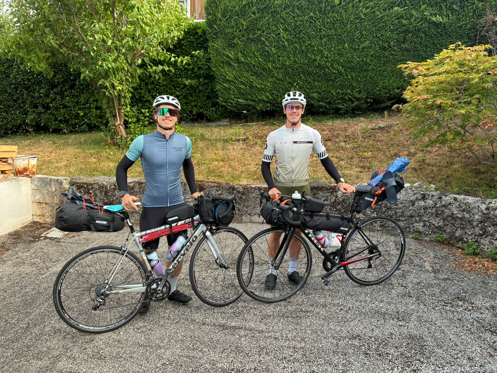
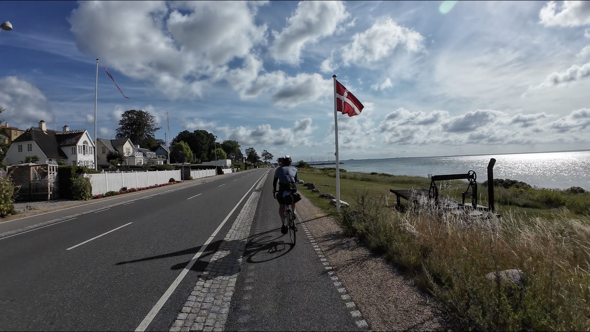
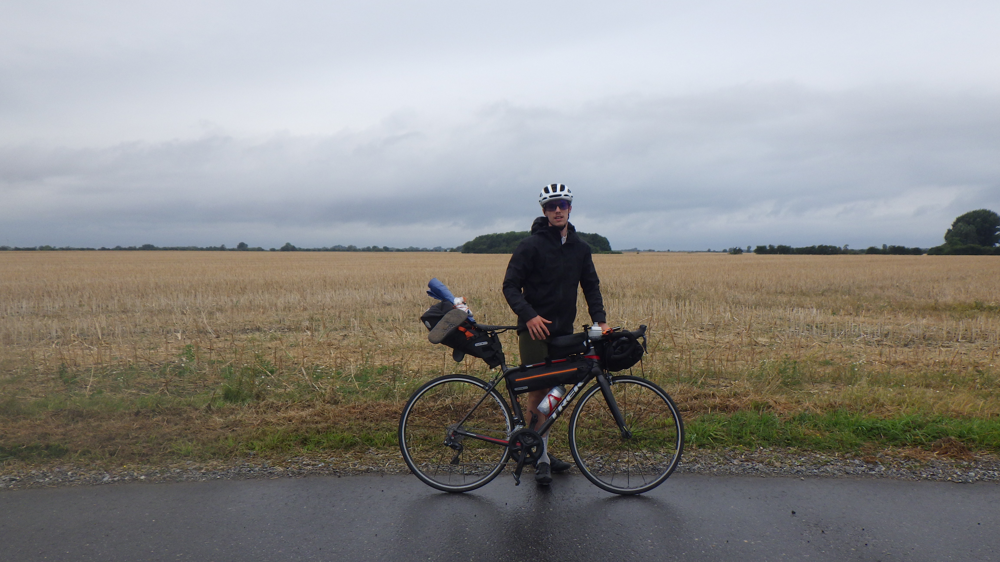
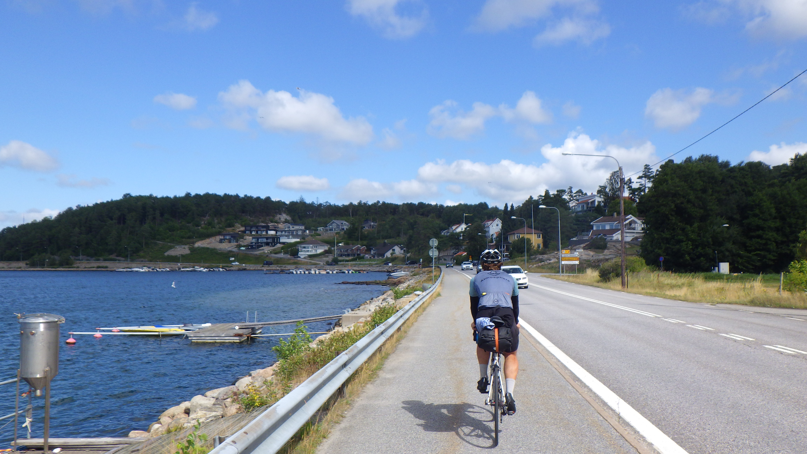
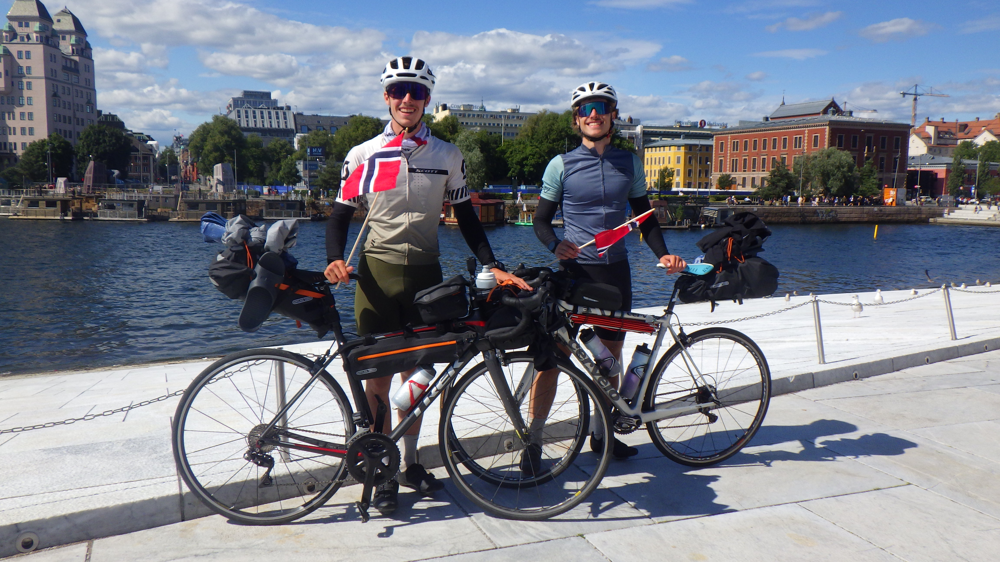

Bropacking trip
Annecy-Oslo
Juste deux frères, deux vélos, et une tente
Avant de plonger dans le récit jour par jour, plantons le décor. C'était une itinerance à vélo entre deux frères, armés de nos vélos, d'une tente, et du strict minimum de matériel. Matt et moi avons toujours été passionés d'expeditions ou de sport outdoor en général, et pour être honnête, on s'entendait déjà très bien avant ce voyage. Mais survivre à 15 jours de vent de face, de galères mécaniques, et de nuits côte à côte nous a encore rapprochés. Bienvenue dans le « Bropacking trip » !
JOUR 1-4 : Départ de la maison
On a démarré ce voyage directement depuis notre maison d'enfance à Annecy. Le plan était de longer la côte de la mer du Nord avant de remonter vers la Suède et la Norvège, ce qui impliquait de traverser le nord de la France pour rejoindre la Belgique. Le jour 1 dans le Jura (170km) nous a mis une sacrée claque à cause du dénivelé brutal! Le jour 2 a été long mais tranquille. En revanche, le jour 3 nous réservait une mauvaise surprise : Matt s'est réveillé avec une gastro qui lui a vidé toute son énergie (impossible de manger quoi que ce soit sans... enfin, vous voyez). En réalisant qu'on était« oxy complet » on a ravalé notre fierté et pris le train pour se rapprocher de la Belgique.

Jour 4-8 : Pays-Bas et le désastre du pédalier
Après une bonne journée à traverser Bruxelles, on a planté la tente aux Pays-Bas. Le paysage a radicalement changé, et les pistes cyclables néerlandaises sont un vrai regale à rouler ! Notre prochain objectif était Haarlem, pour dormir chez Ties, un ami de longue date. malheureusement : à seulement 30km de Haarlem, Matt a découvert une fissure dans son pédalier. On a réussi à atteindre Haarlem, mais son vélo était officiellement mort. Heureusement, on se trouvait dans le pays du vélo. On a donc dû rester un jour de plus en attendant la livraison d'un nouveau pédalier. On a profité de ce « jour off » forcé pour visiter Haarlem et Amsterdam avec Ties. Pour rattraper le temps perdu, notre solution a été de sauter dans un train à 17h juste après l'opération du vélo, dormir à Dortmund, prendre un autre train le matin pour Hambourg, et reprendre la route à 10h le jour 8.

Jour 8-10 : Un nouveau trip
Apres un jour off, nos jambes n'attendaient plus que de retourner sur les pédales. Le paysage s'est encore totalement transformé, nous offrant des vues incroyables en longeant la côte au nord de Lübeck vers la frontière danoise. Le jour 9 nous a réveillés sous la pluie pour la première fois. On était quand même tellement excités à l'idée de rejoindre le Danemark via un immense ferry qu'on a poussé aussi loin que possible, jusqu à camper près de Næstved. Première crevaison du voyage, et la pluie a eu raison du téléphone de Matt (les poches arterix ne sont pas toujours waterproof...). Le jour 10 a été une demi-journée de vélo car on voulait explorer Copenhague. La tente est restée dans le sac ce soir-là — on s'est offert un vrai lit d'hôtel ! On a fêté ça avec un gros dîner avec l'équipe Salomon Bags, en échangeant nos histoires de route.

Jour 10-14 : La côte suédoise
Après un gros petit-déj et apres avoir longé la « Côte d'Azur » `` danoise, on a sauté dans un autre ferry et débarqué en Suède ! Honnêtement, l'étape suédoise a été mon moment préféré. Avec des paysages à couper le souffle, des maisons en bois rouges emblématiques, d'herbe vert fluo, et des fjords magnifiques. Un soir, on a campé dans un petit champ de ferme à seulement 100 mètres de la mer. L'eau était glaciale, mais c'est bon pour la récup. Physiquement, ces quatre jours ont été durs : des vents de cotés brutaux avec des vélos chargés et une chaleur écrasante. Mais ça reste un moment incroyable du voyage !!!

Jour 15 : OSLO
Après avoir longé les rives d'un magnifique lac né d'un fjord, on est enfin arrivés à Oslo ! Notre mère nous attendait à la ligne d'arrivée. 1900 kilomètres, un vélo cassé, un téléphone noyé, et un million de souvenirs plus tard... on l'a vraiment fait. Place à un repos bien mérité et à un bon sauna...

Notre Itinéraire
Voici la carte de notre voyage. On part de chez nous, à Annecy, direction Oslo, avec une moyenne de 150km par jour.